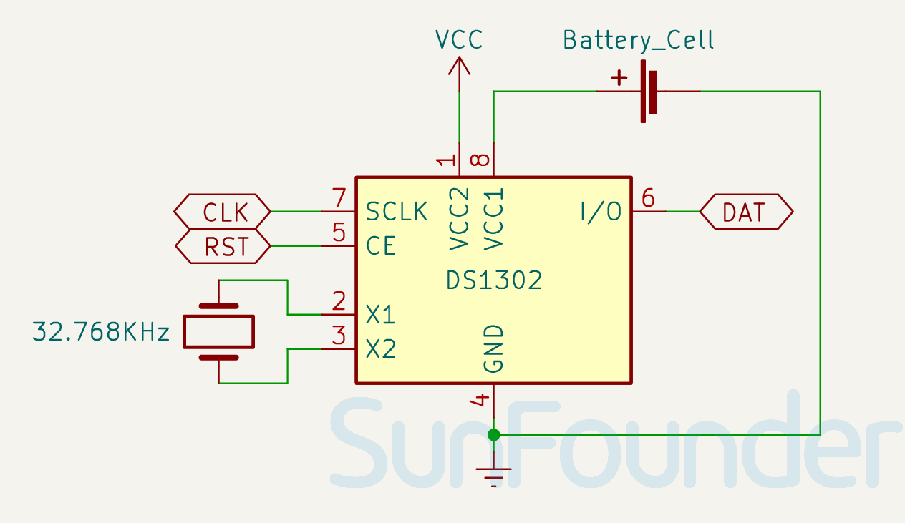
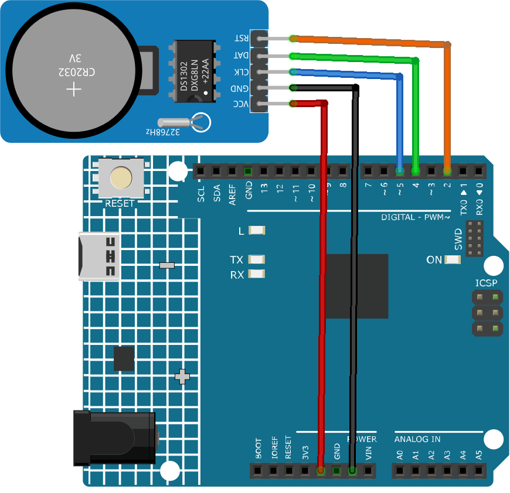

Note
Hello, welcome to the SunFounder Raspberry Pi & Arduino & ESP32 Enthusiasts Community on Facebook! Dive deeper into Raspberry Pi, Arduino, and ESP32 with fellow enthusiasts.
Why Join?
Expert Support: Solve post-sale issues and technical challenges with help from our community and team.
Learn & Share: Exchange tips and tutorials to enhance your skills.
Exclusive Previews: Get early access to new product announcements and sneak peeks.
Special Discounts: Enjoy exclusive discounts on our newest products.
Festive Promotions and Giveaways: Take part in giveaways and holiday promotions.
👉 Ready to explore and create with us? Click [here] and join today!
Real Time Clock Module (DS1302)

Introduction
The DS1302 module is a Real-Time Clock (RTC) module that can track years, months, days, weekdays, hours, minutes, and seconds. It also has the ability to adjust for leap years. It is useful for creating projects requiring precise timing and scheduling.
Principle
DS1302 is a trickle charging clock chip, launched by DALLAS in America. With a built-in real-time clock/calendar and a 31-byte static RAM, it can communicate with MCU through simple serial ports. The real-time clock/calendar circuit provides information about second, minute, hour, day, week, month, and year. DS1302 can automatically adjust the number of days per month and days in leap year. You can determine to use a 24-hour or 12-hour system by AM/PM selection. It can simply communicate with MCU in synchronous serial way and only needs to use three port cables: Reset (RST) cable, I/O data (SDA) cable and serial clock (SCL) cable.
Module Schematic Diagram


Usage
Hardware components
Arduino Uno R4 or R3 board * 1
Real Time Clock Module(DS1302) * 1
Jumper Wires
Circuit Assembly


Code
Note
To install the library, use the Arduino Library Manager and search for “Rtc by Makuna” and install it.
Code explanation
Initialization and library inclusion
Note
To install the library, use the Arduino Library Manager and search for “Rtc by Makuna” and install it.
Here, necessary libraries are included for the DS1302 RTC module.
#include <ThreeWire.h> #include <RtcDS1302.h>
Define pins and create RTC instance
Pins for communication are defined and an instance of the RTC is created.
const int IO = 4; // DAT const int SCLK = 5; // CLK const int CE = 2; // RST ThreeWire myWire(4, 5, 2); // IO, SCLK, CE RtcDS1302<ThreeWire> Rtc(myWire);
setup()functionThis function initializes the serial communication and sets up the RTC module. Various checks are made to ensure the RTC is running correctly.
void setup() { Serial.begin(9600); Serial.print("compiled: "); Serial.print(__DATE__); Serial.println(__TIME__); Rtc.Begin(); RtcDateTime compiled = RtcDateTime(__DATE__, __TIME__); printDateTime(compiled); Serial.println(); if (!Rtc.IsDateTimeValid()) { // Common Causes: // 1) first time you ran and the device wasn't running yet // 2) the battery on the device is low or even missing Serial.println("RTC lost confidence in the DateTime!"); Rtc.SetDateTime(compiled); } if (Rtc.GetIsWriteProtected()) { Serial.println("RTC was write protected, enabling writing now"); Rtc.SetIsWriteProtected(false); } if (!Rtc.GetIsRunning()) { Serial.println("RTC was not actively running, starting now"); Rtc.SetIsRunning(true); } RtcDateTime now = Rtc.GetDateTime(); if (now < compiled) { Serial.println("RTC is older than compile time! (Updating DateTime)"); Rtc.SetDateTime(compiled); } else if (now > compiled) { Serial.println("RTC is newer than compile time. (this is expected)"); } else if (now == compiled) { Serial.println("RTC is the same as compile time! (not expected but all is fine)"); } }
loop()functionThis function periodically fetches the current date and time from the RTC and prints it on the serial monitor. It also checks if the RTC is still maintaining a valid date and time.
void loop() { RtcDateTime now = Rtc.GetDateTime(); printDateTime(now); Serial.println(); if (!now.IsValid()) { // Common Causes: // 1) the battery on the device is low or even missing and the power line was disconnected Serial.println("RTC lost confidence in the DateTime!"); } delay(5000); // five seconds }
Date and time printing function
A helper function that takes a
RtcDateTimeobject and prints the formatted date and time to the serial monitor.void printDateTime(const RtcDateTime& dt) { char datestring[20]; snprintf_P(datestring, countof(datestring), PSTR("%02u/%02u/%04u %02u:%02u:%02u"), dt.Month(), dt.Day(), dt.Year(), dt.Hour(), dt.Minute(), dt.Second()); Serial.print(datestring); }
Additional Ideas
Display time on LCD or serial monitor
Schedule events/alarms at certain times